desert_spider · passes 92, 93 and 94 · 19 Oct 2026Your 3D spider, walked and killed the way the Dune Scorpion was: Blender moves the model, its depth renders guide the video model, and the paintings give it its looks. Pass 94 starts at the top: SP-E and SP-F were awful, and section ★ shows where their artifacts came from and the two new light purple looks, SP-G on Klein and SP-H on Flux.2 dev, each with many iterations, both painted over the model itself at SP-A's realism in the house style. The older sections (the model, its legs, the walk and its fix, the death) still describe how the spider is built. Every picture here is from the real runs.
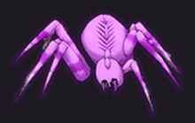
SP-H · Flux.2 dev, many iterationsLight purple, SP-A's realism in the house style, painted over the model.SP-G (Klein) and SP-H (Flux.2 dev), light purple, SP-A's realism in the house style, every view the 3D model itself repainted (section ★).
is where SP-E and SP-F went wrong first: their views were not the model, and Wan smeared the difference.
how much of the model's outline a painting keeps, painted from scratch against painted over the clay itself.
of AI server time for SP-G; SP-H about 4 h 45 min: Flux.2 dev restarts the server for every picture.
You played SP-E and SP-F and wrote: "the results are actually awful. Lots of artifacts, side views are all messed up, pretty much every view looks wrong ... the only view from which either of these 2 spiders look kind of ok is the front". You were right: they are bad, and below is why. Then you asked for two more, both light purple, as close to the 3D model as possible, one on Klein and one on Flux.2 dev, each with many iterations; and, when the first try came out photoreal: "I meant not fully realistic, but the realistic version that is still in our style ... like SP-A level of realism." That is what SP-G (Klein) and SP-H (Flux.2 dev) are: SP-A's real spider anatomy, small eyes and no cartoon face, in the game's cel-shaded style with its outline, light purple, every view painted over the model itself.
Before: SP-B (pass 92) and SP-E, SP-F (pass 93). Kept in the JSON, fresh, not to be played.
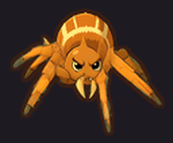
For every view, the clay render of the model, the painting the walk starts from, and four frames of the finished walk, side by side. If the damage is already in the painting, more walking iterations cannot fix it; if the painting is fine and the walk is not, it is Wan.
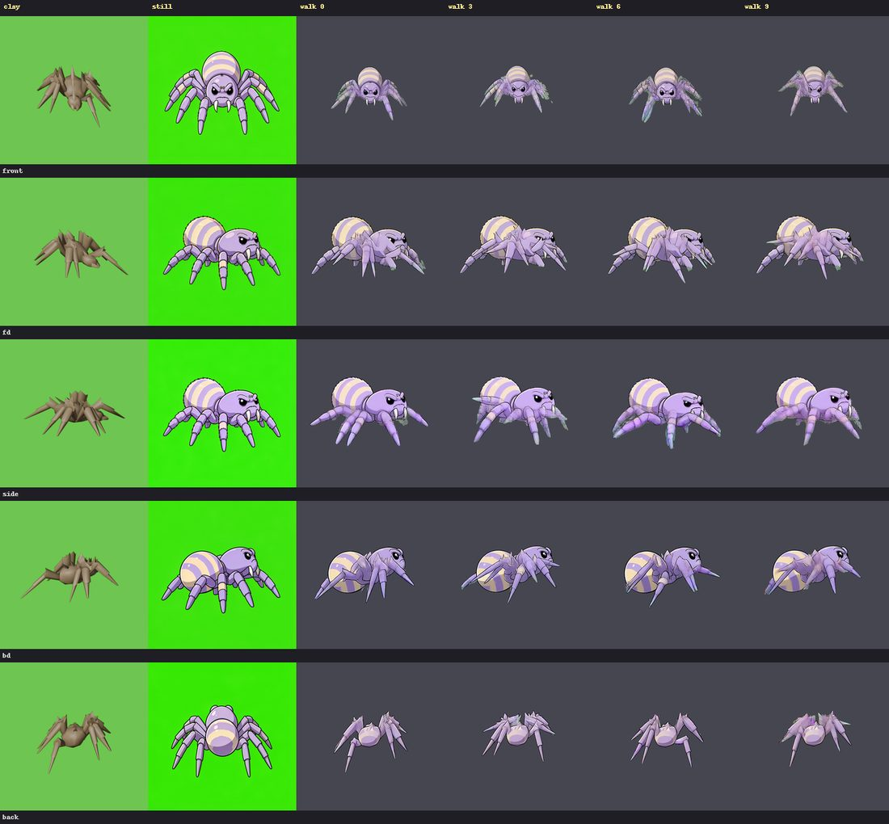
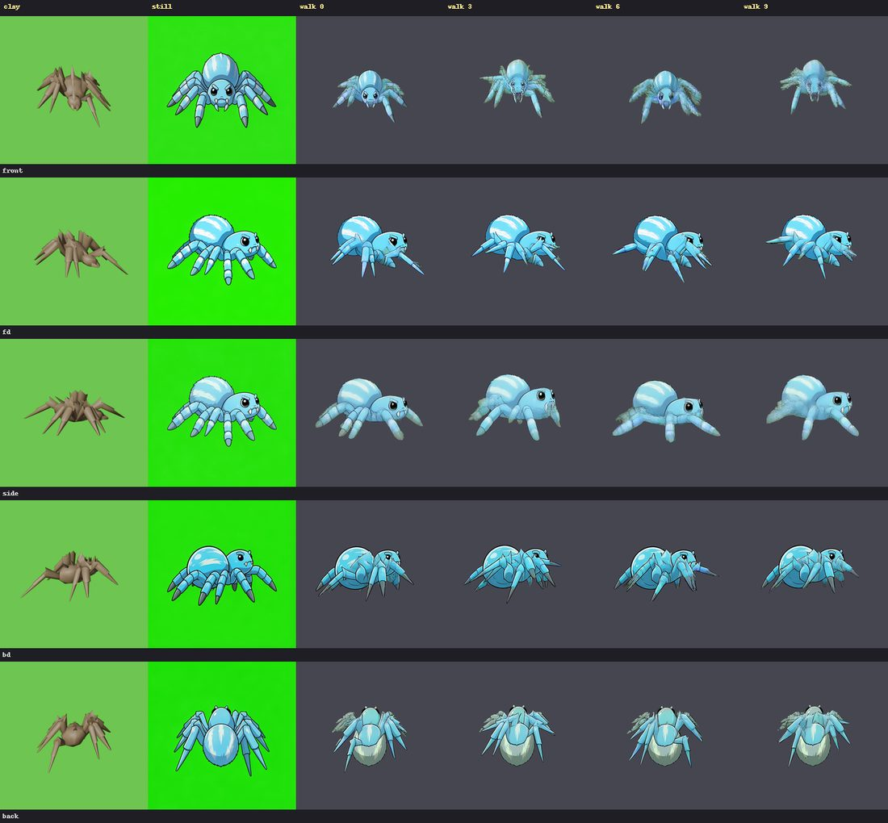
Both, and the painting first.
So the iterations had to go first into a painting that is the model, view by view, and second into the walk.
And a third thing, found only when the new paintings were walked: the model's own legs. Your spider's legs are stacked cones, one per bone, and each cone's wide end stands past the joint. From the three-quarter and side cameras those wide ends read as a row of crystal spikes above the body, and the depth video, which is what Wan follows, is a mass of them. A painting with smooth legs is walked back into spikes whatever the painter did, in every look since SP-A. The front view escapes it (the knees are seen edge-on), which is why the front was always the one view that looked right.
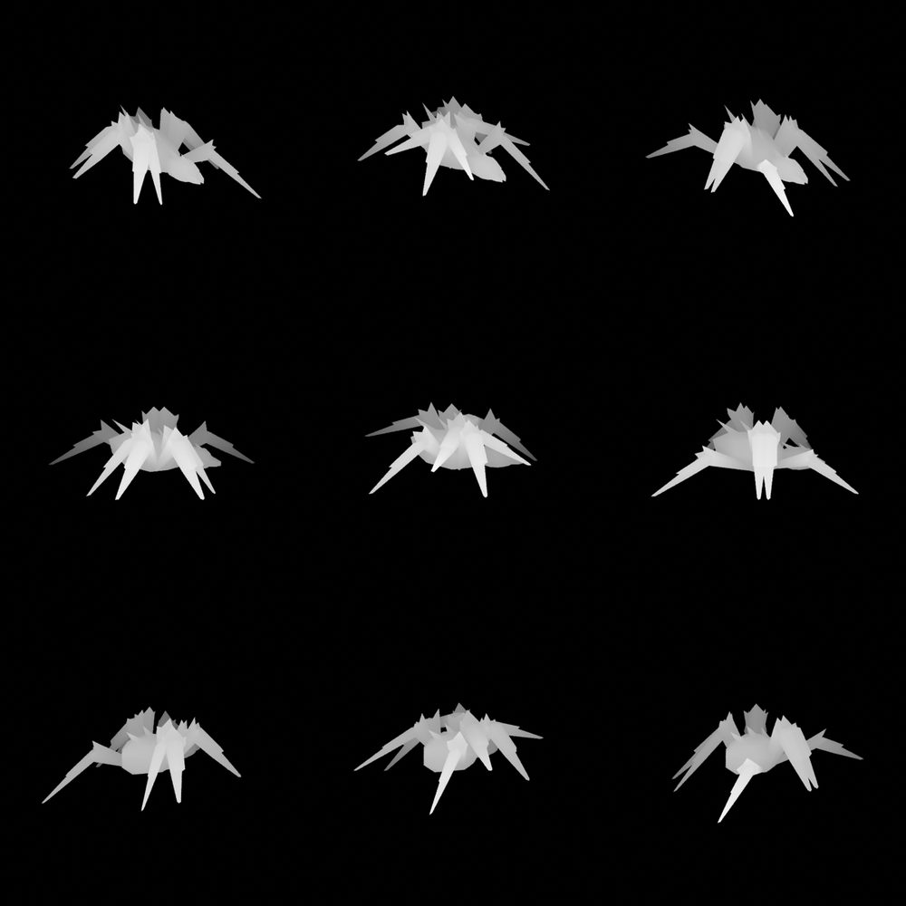
spider_walk_v2, three frames each of the three-quarter front, side and three-quarter back): the body is barely there between the cones' wide ends.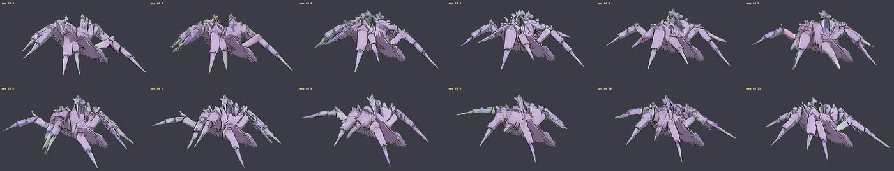
Every look before this pass described the clay to the painter as one of three pictures (style picture first, clay second). The new mode paint_mode: "repaint" turns that round:
anchor: true), so the house style stays.clay_fill 0.8), so the painter sees it big; the painting is put back exactly where the crop came from before the walk, so it lies on the depth video's spider.init: img2img). The grey render is coloured lavender on the pure green screen and the painter starts from it, partly noised, instead of from pure noise. This is what really holds every leg where the model has it: measured as the overlap of the painting's outline with the clay's (1 = identical), plain prompting gives 0.5–0.7, starting from the clay 0.75–0.95.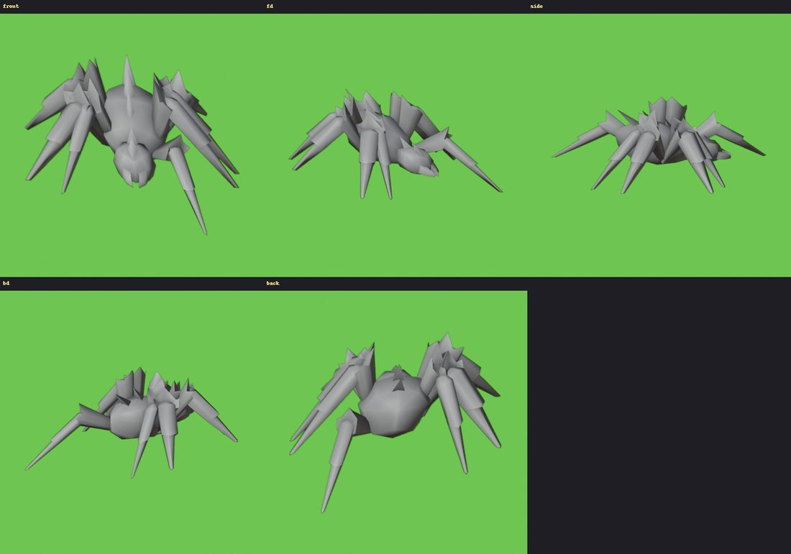
clay_src: "look", grey, so no clay brown leaks into a light look) from the five game views, cropped (clay_fill 0.8).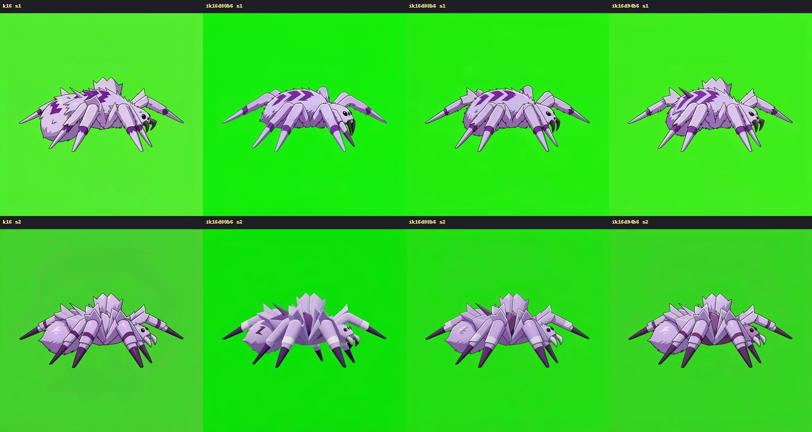
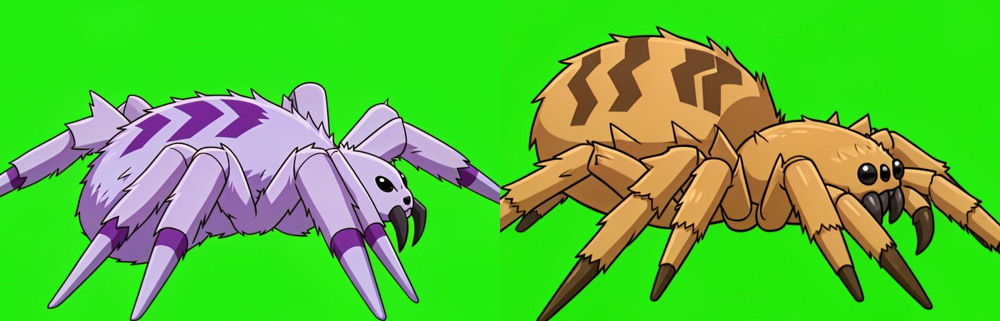
Klein 9B is a distilled model meant for 4 steps; the non-distilled Klein base exists on the server only as the small 4B, not the 9B. What "many iterations" honestly means for it, measured:
iou.py), but the pick is by eye: a high overlap can mean the fins were copied.init.blur 10): softens the model's facets before Klein starts, so it keeps the shapes but not the polygons.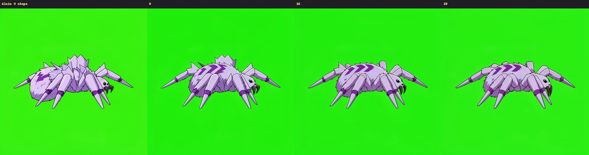
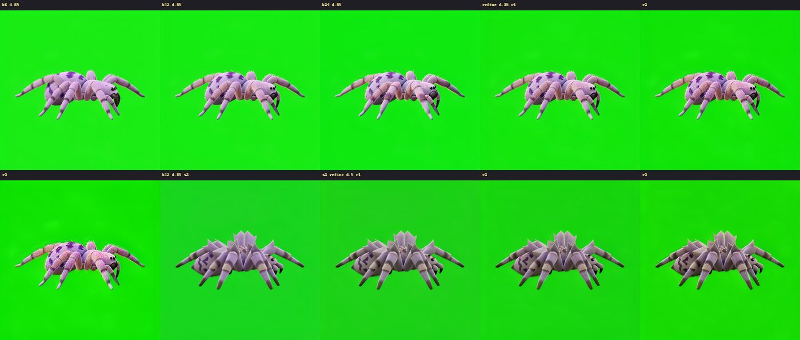
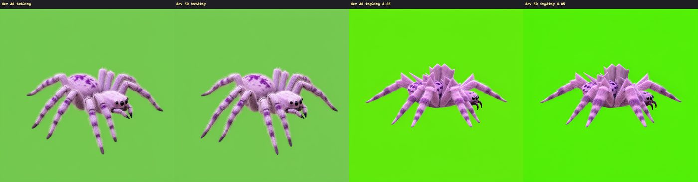
| Flux.2 dev, side view, one seed, from the clay | Outline overlap with the model |
|---|---|
| 40 steps, denoise 0.85, the sharp clay | 0.87 (follows; copies the facets) |
| 40 steps, 0.85, blurred 8 px | 0.36 (ignores it) |
| 28 steps, 0.85, blurred 8 px | 0.35 |
| 40 steps, 0.85 and 0.88, shading blurred 12 px, sharp outline | 0.35, 0.35 |
| 40 steps, 0.85, shading posterized in 3 bands | 0.36 |
| 40 steps, 0.80, shading blurred 12 px | 0.37 |
| 40 steps, 0.91, the sharp clay (another seed) | 0.32 |
| + a dev refine round at 0.60 | 0.88 (the facets stay) |
Three things were tried on the side view with the same SP-G painting, each walked on the full Wan (below), against the walk on the raw depth:
smooth 2: a subdivision for the renders only; spider_walk_v3). The cones get rounder, the spikes stay: they are the cones' wide ends, not sharp edges.ctl_soft 10 px, pass 92's trick for a cartoon face). Much better: the painting's body, face and legs survive, because Wan no longer sees the spikes sharply; the legs step a little more vaguely.skin capsule, new: spider_walk_v4, spider_death_v3). The legs' own mesh is thrown away and each leg segment, from one bone's head to the next bone's head, becomes a tapered capsule (the leg's radius 6% of its length at the hip, a point at the foot), skinned to its bone; the body, head and fangs stay the model's. The depth video is then a clean spider from every camera, and the clay too. The bones' tails could not be used: the glTF importer invented them, pointing anywhere, which is also why pass 93 measured the feet from the mesh.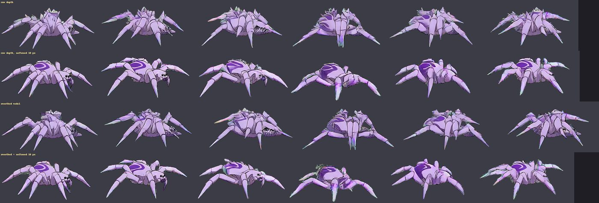
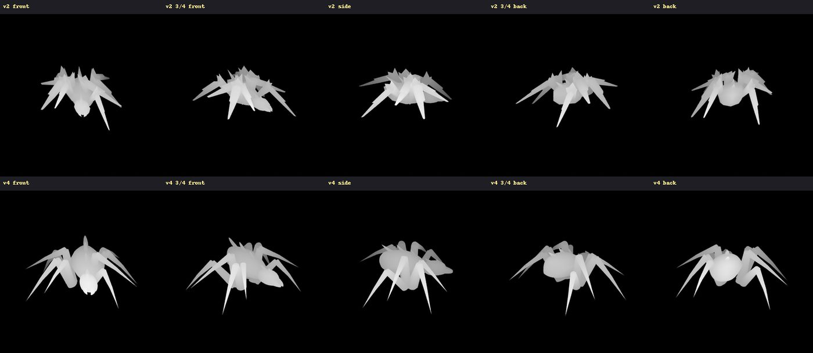
spider_walk_v4). The gait check passes on both (the feet step the same way); only the shapes changed.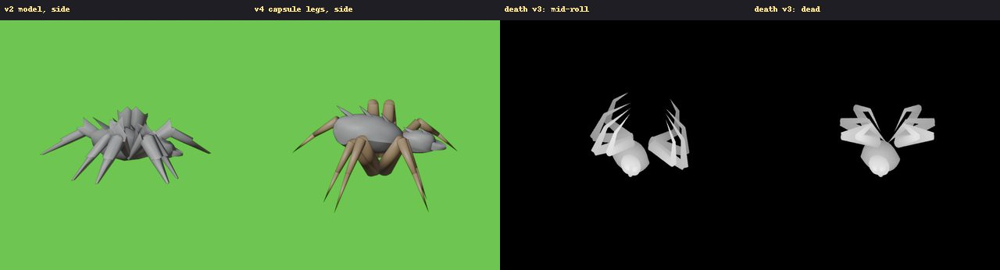
spider_death_v3) mid-roll and dead: the capsules are children of the armature, so the roll takes them along.Both looks walk and die on the rebuilt legs. The paintings stay the ones painted over the raw clay: each is put back exactly over the new depth video's figure before the walk, and its legs lie where the bones are either way.
Every walk so far ran Wan 2.2 Fun Control with the lightx2v speed-up LoRA: 4 steps, cfg 1. At cfg 1 the negative words are never even computed. The bigger Wan (no other Fun Control model is on the server) is the same model without the LoRA: wan: {"lora": false, "steps": 20, "cfg": 3.5}, 10 steps on each of its two halves, a real cfg, and the negative words ("ghost legs, transparent legs, smeared legs, extra legs ...") now act. One view first, the same painting:
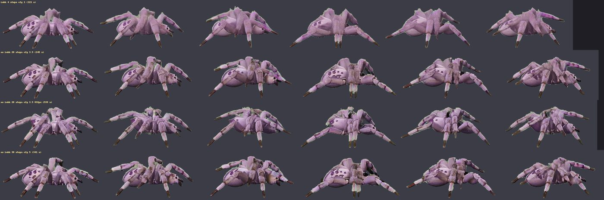
It costs only about twice the time, not ten times: most of a walk's time is loading the two 14 GB halves of the model.
The same model, the same walk (spider_walk_v5, the fins dropped; SP-G's back stays on v4), the same death (spider_death_v5), the same Wan settings and the same kept death frames; only the painter differs (a test pins it: pass94_REAL_test.gd). These are the strips as installed after the fixes in 6b and 6c. SP-G's row above SP-H's for every view, every other frame of the walk and every kept frame of the death.
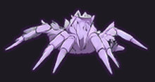
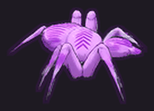
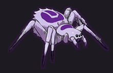
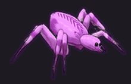
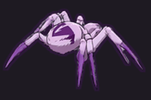
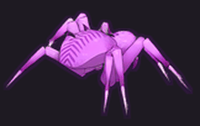
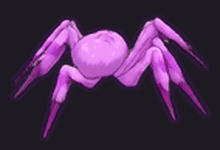
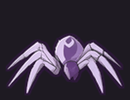
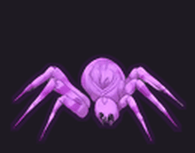
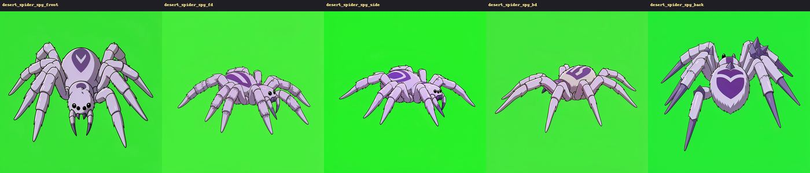
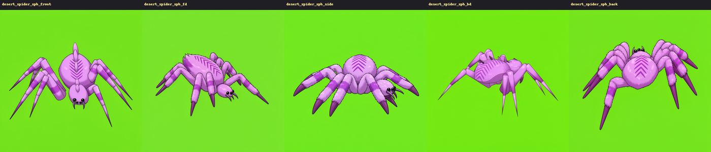
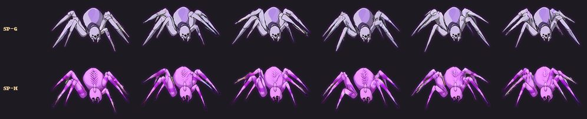
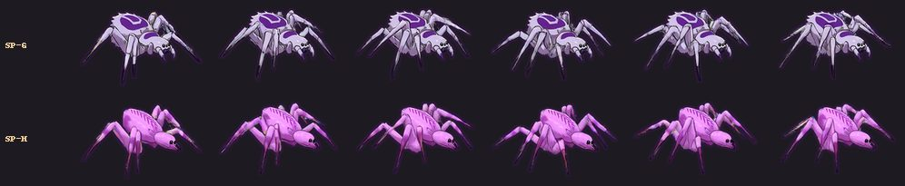
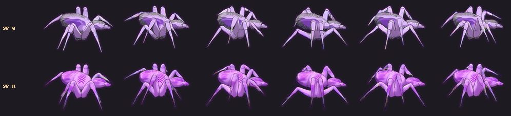
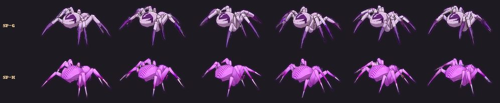
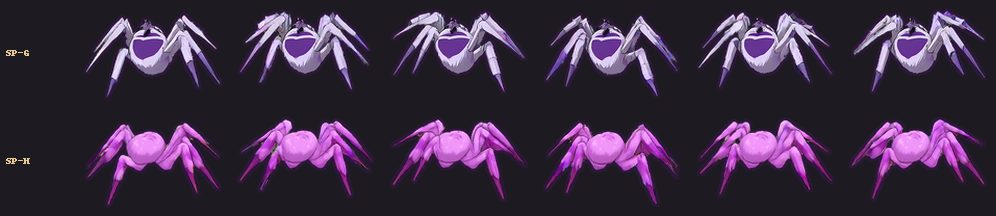
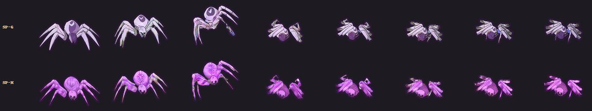
Which reads better. In the game, SP-H: its strong magenta silhouette stands off the sand, its legs are solid in every view and it keeps the chevron, eyes and fangs in the front walk. Its faults are the colour (magenta-orchid, not the light lavender you asked for) and the three-quarter front and side heads, which lost their eyes. SP-G is the light purple you asked for; after round 2 its three-quarter views are painted again with solid, opaque legs and read cleanly, and the spike is gone, so the gap is much smaller. Its front and back are still paler than SP-H's and its thin legs keep a few rainbow edges, so side by side SP-H is still the slightly cleaner sprite, and SP-G the one in your colour.
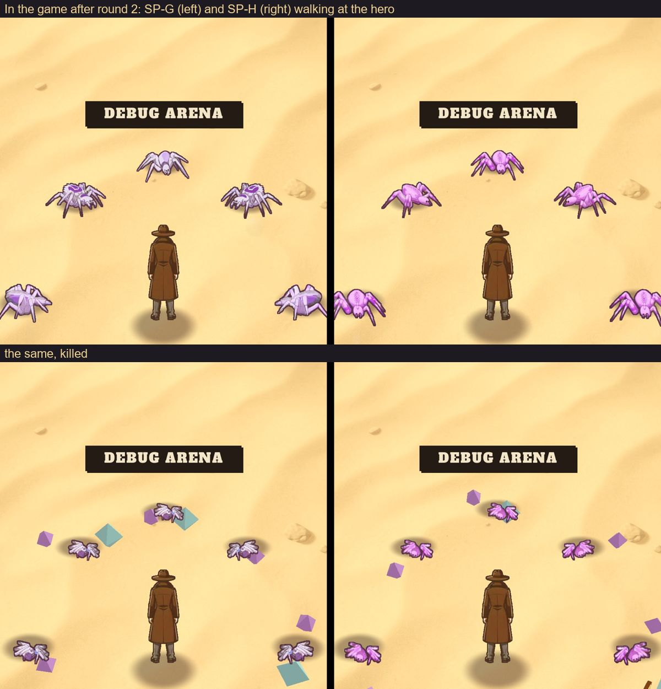
tools/item_shots.gd creatures=desert_spider@SP-G,desert_spider@SP-H zoom=0.7), three of each walking at the hero.Every walk and the death of both installed strips, looked at frame by frame on numbered sheets (the 160 px cells the game plays, and the 640 px clip frames they were cut from, where legs can be counted). The local vision model was not asked to count legs (pass 98: it answers "8" almost always), and Gemini's quota was spent. Your eye is the judge; the table is what mine saw.
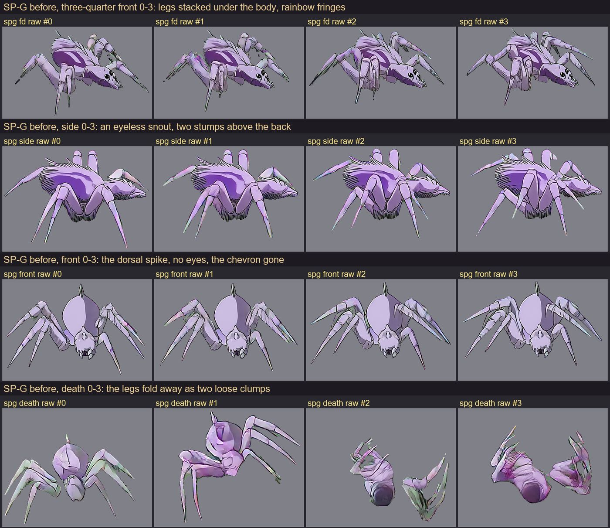
| View | SP-G before | SP-G after | SP-H before | SP-H after |
|---|---|---|---|---|
| front | no eyes, the chevron gone, the model's back fin as a spike; fringes on the left legs (1, 2, 4, 5, 8-10) | fixed by a re-roll: small eyes, two fangs, the violet half; the spike stays; light fringe on 1, 4, 5, 9 | 4 + 4 legs, chevron, eyes, fangs; the spike and a nub on the head; 5 slightly smeared | the same (the repair did not help) |
| 3/4 front | legs stacked under the body into vertical tubes, rainbow fringes (1, 2, 5, 7-10), googly eyes | not fixed (a re-roll, softened depth and VACE were all worse) | no eyes, the chevron gone; fringe specks 5, 8, 11 | the same |
| side | an eyeless snout; two stumps above the back | not fixed (a re-roll came out the same) | the same snout and stumps | the same |
| 3/4 back | a grey-pink fan where the abdomen ends; mauve drift; fringes | not fixed (a re-roll was worse) | clean, chevron, 4 + 4 | the same |
| back | clean: 4 + 4, the violet heart | the same | clean; the chevron became faint lines | the same |
| death | the legs fold away as two loose clumps, smears in 2-4, reads as a moth | fixed for both: a new death driver keeps the legs folded against the body, and the kept frames skip the roll's smears | ||
Why most of it could not be fixed cheaply. The faults are not in a few frames: they run through whole views, and they come from the walk, not the painting. Wan paints SP-G's thin, pale legs half see-through over the green screen, and the keying leaves rainbow edges; the three-quarter front's legs pile up because the depth video shows them overlapping there. The cheap tools were tried in order:
walk_seeds, about 4 minutes a view): the front came back with its face, so it was kept; the three-quarter front, three-quarter back and side came out no better or worse.ctl_soft 10, which saved the side in pass 94's test on the raw model): on the rebuilt legs it turned the three-quarter front's head into a long snout.spider_death_v3 swings the folded legs out as wings, first row below), so no seed could fix it. Three other curls were rendered in Blender on the PC; the tightest (curl 100, curl_root 20, roll 170) became spider_death_v4, both deaths were walked on it, and eight frames were kept that skip the roll's smears.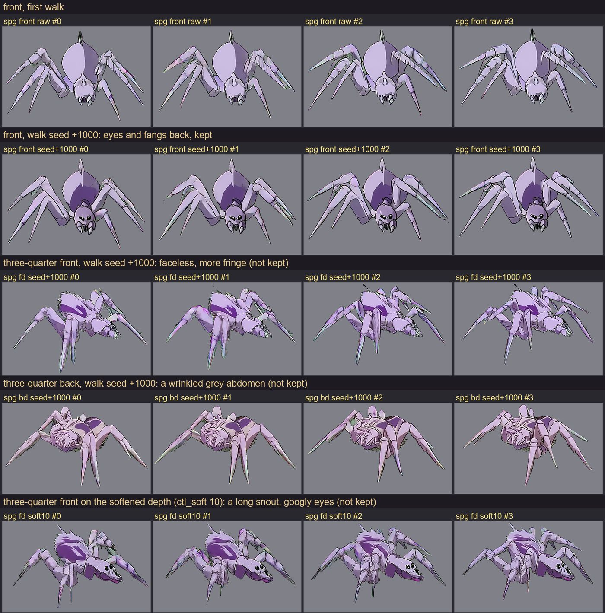
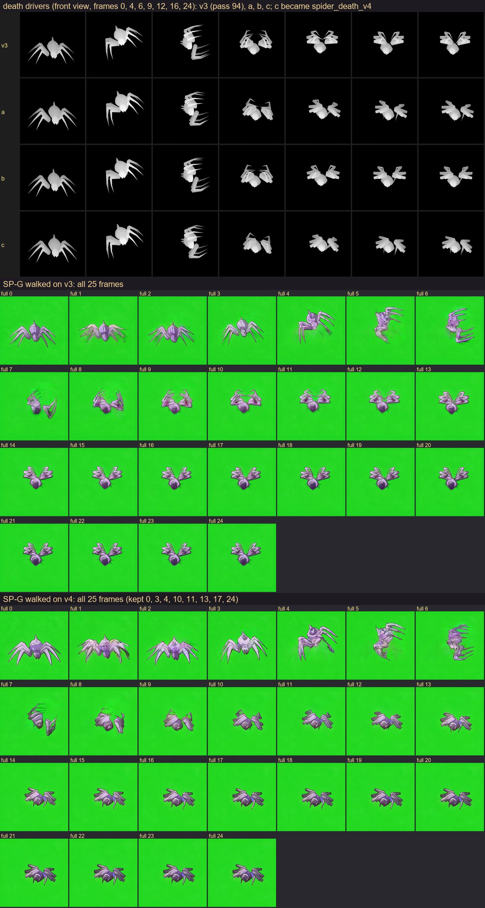
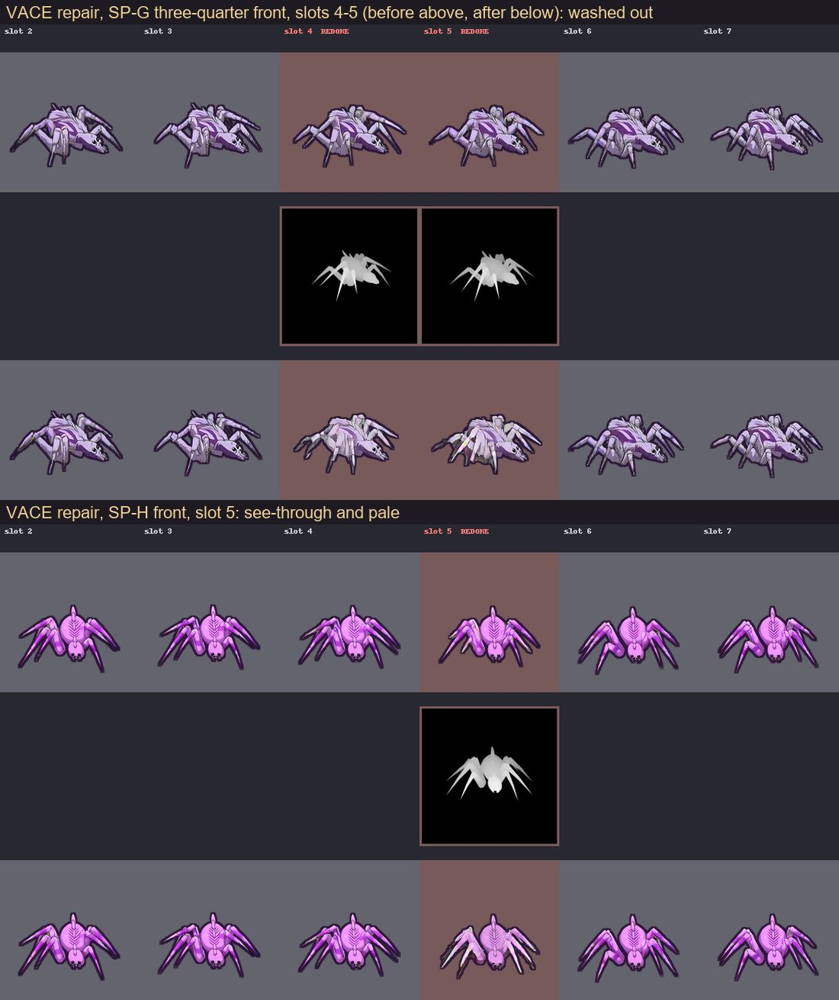
SP-H's picks (pass 94 painted the candidates; pass 99 chose): front c5 (two small eyes, two fangs, the chevron, smooth banded legs; c0-c2 copied the model's leg fins, c3 has four fangs, c4 a mouth with little teeth; all six carry the model's back fin as a spike, which the walk keeps anyway), three-quarter front c2 (smooth, chevrons; c0 and c1 copy the fins), side k2 (pass 94's pick), three-quarter back the plain painting (smooth, no fins, the chevron; the three candidates were faceted or finned), back c1 (no fins; c0 and c2 finned). No extra seeds were needed. The walks ran on the same drivers and Wan settings as SP-G's.
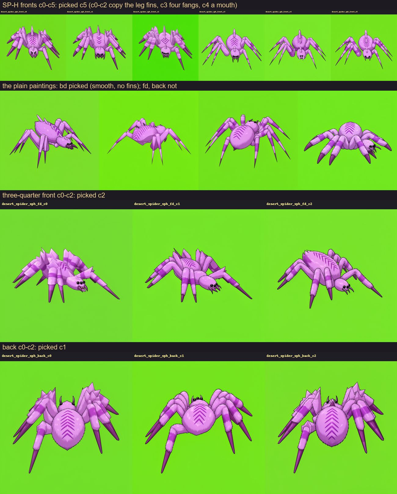
The spike. Both looks walked with a spike on the abdomen in the front view, and the three-quarter and side views had fins along the back. They were not in either painter: your 3D model has three small fins glued on its back and a nub on its head, each a loose 3- or 4-corner piece of the mesh, and the depth video Wan walks along showed them in every view. A new driver setting, drop_islands, deletes such small loose pieces that hang on the body or head bones before the renders (the model file itself is not touched; the fangs and legs are bigger pieces and stay). spider_walk_v5 is spider_walk_v4 with drop_islands 4 (16 seconds on the PC, the gait check passes) and spider_death_v5 the same for the death. Every view of both looks was walked again on it with the same seeds as the installed walks, and each new walk was kept only if it was at least as good frame by frame: all were except SP-G's back, which came out with crystal-faceted far legs and a split heart mark, so SP-G's back still walks on v4 (view_drivers {"back": "spider_walk_v4"}; its fin was only a small nub there). The paintings were painted on v4's clay, so clay_drivers keeps v4's crop for them and they lie exactly where they did.
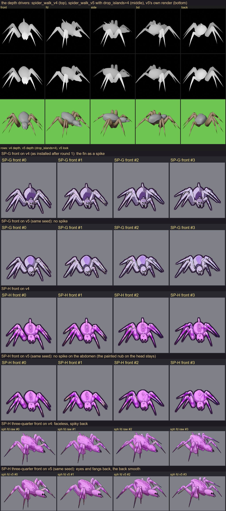
SP-G's three-quarter views. The cheap fixes had failed because the paintings themselves were pale and flat. Both were painted again: four seeds each on the look's own painter (Klein, 28 steps, from v5's clay), with words for those two views only (view_words: "strong value contrast ... the abdomen a solid saturated violet with a bold dark violet chevron, the legs solid and fully opaque, banded in light lilac and dark violet ..."). Picked by eye: three-quarter front c2 (the bold chevron, dark leg tips, the head at the near corner; c3 had a cast shadow on the screen and turned blue, c0 and c1 were as pale as before), three-quarter back c0 (the dark abdomen mark and opaque violet legs; c1 and c2 face the wrong way, c3 walked with smears on its far legs). Both walks are clearly better than before: solid bodies, the legs readable, far fewer rainbow edges.
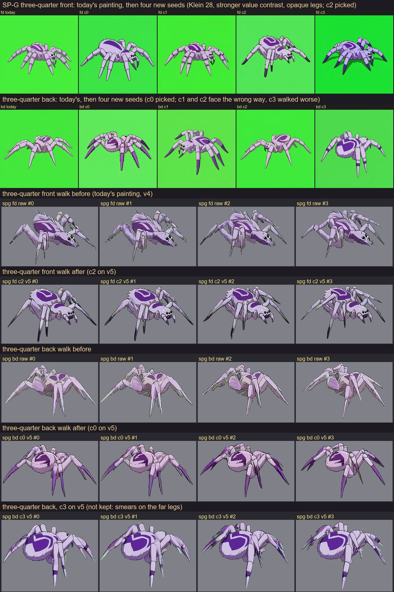
| View | SP-G after round 1 | SP-G after round 2 | SP-H after round 1 | SP-H after round 2 |
|---|---|---|---|---|
| front | eyes and fangs; the fin spike | no spike; a pale head with dark eyes and fangs | the fin spike and a head nub | no spike; the painted head nub stays; eyes a little weaker |
| 3/4 front | legs stacked into tubes, rainbow edges | new painting: solid body, bold chevron, eyes and fangs, opaque legs; light fringe on 5, 8, 9 | no eyes, spiky back | fixed: eyes and fangs back, the back smooth |
| side | eyeless snout, two leg tops above the back | the same, without the fins | the same | the same, without the fins |
| 3/4 back | a grey-pink fan, mauve drift | new painting: a dark violet mark, opaque violet legs | clean | the same |
| back | clean | unchanged (kept on v4) | clean | the same, the head nub gone |
| death | curled on its back | the same, no spike in its first frames | curled on its back | the same, no spike |
Left for you to decide (not touched): SP-H's colour (magenta-orchid, not lavender), and the two far-leg tops above the back in the side views (they read as the far legs in the game).
Read literally ("drop the cartooniness"), the first SP-G and SP-H were painted without the style anchor and with a realistic style line. They came out as soft 3D renders of a furry lavender spider, closer to a photo than to the game. You corrected it; those paintings and the one finished strip are kept outside the game (tools/dl/p94/REAL/backup/photoreal/). Their tests still taught the settings above (steps, refine, dev's steps, Wan).
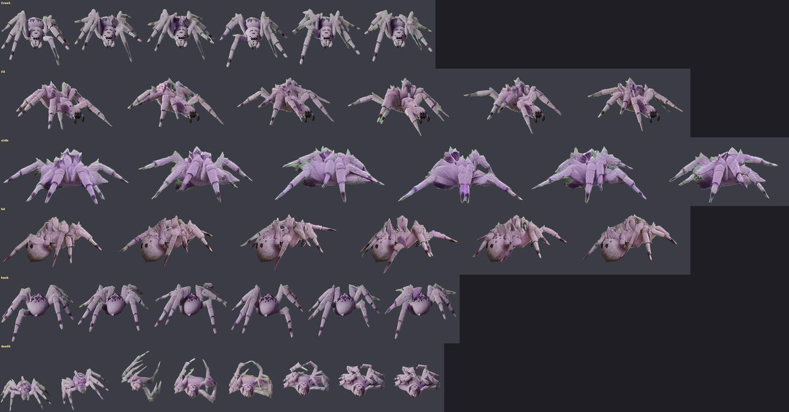
Two duplicates of SP-A, each a job of yours and a few picks. The recipe keys are new in pass 94 and sit in creature_ctl's Recipe (typed)… with their help texts; the model and steps are the job form's own Model group.
spider_8legs, mode gait, legs leg_, forward +Y, step track, stride 0.22, raise 0.15, crouch 0.15, sway 0, bob 0.03) with two new fields: smooth 2 and skin capsule (skin_radius 0.06, the default), name spider_walk_v4. Queue (fifteen seconds); the job runs the gait check as before. The death the same way: mode flip_curl, curl 100, curl_root 20, roll 170, twitch 4, views front,fd,side, smooth 2, skin capsule, name spider_death_v4 (pass 99: pass 94's spider_death_v3, curl 55 and curl_root 70, swung the folded legs out as two wings off the body, and every death walked on it came out as two loose clumps). Open the driver in the Drivers tab: the legs are smooth tapered rods, no spikes, in every view, and in the dead pose they lie folded against the body. Round 2: the same two forms again with drop_islands 4 (new: the model's small loose fins and head nub are left out of the renders), names spider_walk_v5 and spider_death_v5.| Field | SP-G (Klein) | SP-H (Flux.2 dev) | Why |
|---|---|---|---|
| prompt | SP-A's words with the colours changed: pale lavender and light lilac-purple bristly fur, a darker violet chevron pattern ... legs banded in light lilac and darker violet ... the whole spider light purple | SP-A's realism, your colour | |
| detail | SP-A's: a real spider's anatomy and proportions, no cartoon face, no eyebrows, no mouth, no teeth, menacing | not a cartoon | |
| drivers / death_drivers | spider_walk_v5 / spider_death_v5 (round 2; v4 in round 1) | the fixed walk (pass 93) on the rebuilt legs (step 1) | |
| paint_mode | repaint | the model itself is repainted, view by view | |
| anchor | true | the style anchor stays: the house style, not a photo | |
| clay_src / clay_fill | look / 0.8 | the grey render, cropped round the spider | |
| init | {"denoise": 0.88, "tint": "#C4A8E2", "blur": 10} | {"denoise": 0.85, "tint": "#C4A8E2"} | start from the clay; Klein likes it blurred, dev lets go of a blurred one |
| wan | {"lora": false, "steps": 20, "cfg": 3.5} | the full Wan for the walks and the death | |
| death_keep | [0, 3, 4, 10, 11, 13, 17, 24] | the 8 death frames kept of 25, picked by eye (the roll's frames 5-9 smear); a re-pick needs no render | |
| walk_seeds | {"front": 1} | (none) | SP-G's front walked again on another seed after the frame check (its first lost the eyes) |
| clay_drivers | {"front": "spider_walk_v4", "side": "spider_walk_v4", "back": "spider_walk_v4"} | "spider_walk_v4" | new: the driver a view was painted on, so a painting keeps its place when the walk moves to v5 (SP-G's new three-quarter paintings were painted on v5) |
| view_drivers | {"back": "spider_walk_v4"} | (none) | new: one view walks on another driver (SP-G's back was better on v4) |
| view_words | fd, bd: painted with strong value contrast ... the legs solid and fully opaque ... | (none) | new: words for one view's painting only (then Re-roll… → redo one view, 4 candidates) |
| side_seeds | 8 | 4 | Klein pictures are cheap, dev's are 10 minutes each |
| words | per view, the model's layout spelled out (the head's and the abdomen's place, "the body small and low, hanging between the high-arched legs") | the painter reads them before the clay | |
| blockout | … its flat facets, sharp fins and cone-shaped legs are only the model's rough surface, not part of the spider | it helps a little; the seeds help more | |
klein, Steps 28; SP-H: Model dev, Steps 40, Turbo off. Candidates 8 (SP-G) or 4 (SP-H). Queue.walk_seeds, or paint that view again.walk_seeds set to 1 (about 4 minutes); a death that falls apart is the driver (a new + Depth driver…, then death_drivers); a different set of death frames is just death_keep (seconds, no render). Repair with VACE… exists for a few bad frames, but on these two looks it washed the colours out (6b): do not stage what it gives without looking.| Step | SP-G (Klein 28 steps) | SP-H (Flux.2 dev 40 steps, no Turbo) |
|---|---|---|
| One side candidate (1024 px, from the clay) | 100 – 150 s | 490 – 560 s (a server restart before each, about 30 s of it) |
| Side candidates painted, in all | 8 + 6 + 6 + 6 earlier sets (the fins): about 55 min | 4 + 4 + 1 earlier sets (ignoring the clay): about 75 min |
| One view candidate | 100 – 110 s | 670 – 780 s |
| Four views as candidates | 4 each: 28 min | 3 each, plus 3 more fronts: 2 h 30 min |
| One walk (Wan Fun Control, no LoRA, 20 steps, cfg 3.5, 25 frames) | 235 - 300 s a view (about 4 to 5 minutes; the first view of a run is the slowest, the model loads) | |
| The death (25 frames, 8 kept) | 236 - 244 s | |
| Five walks and the death | about 25 minutes a look (SP-G 1,490 s, SP-H 1,515 s) | |
| Views walked or painted again after the frame check | about 31 min: four views walked again on another seed (241 - 250 s each; only the front kept), the three-quarter front on softened depth (301 s, not kept), the death on the new driver (242 s), one VACE repair (343 s, not kept); four death drivers rendered in Blender on the PC (no AI server) | about 10 min: the death on the new driver (244 s), one VACE repair (337 s, not kept) |
| Round 2: the fin-free drivers (Blender, the PC) | 16 s a driver | |
| Round 2: walks again on v5 (same seeds), deaths on v5 | front, side, back, death: about 17 min | five walks and the death: about 25 min |
| Round 2: three-quarter views painted again | 8 candidates (176 s each, about 24 min) and 3 walks (about 12 min) | (none) |
| The look, start to strip | about 3 h 15 min of the server | about 4 h 45 min of the server |
| Settings experiments before either (Klein steps and base, img2img, refine, dev steps and starts, Wan) | about 3 h 20 min of the server, listed in tools/dl/p94/REAL/exp/exp_*.log | |
Every job ran one at a time through the ComfyUI lock, sharing the server with your own Level Editor queue. A Flux.2 dev picture is 5 to 7 times a Klein 28-step one, and dev's pictures needed more sets to find ones that follow the model; the walks cost the same for both. Re-packing a look from its cached walks (a new death_keep, a walk copied in) takes about 10 seconds.
The probe reads a 3D file and says what it can do. For spider._low_poly.glb it found a rig of 31 bones, one clip called Take 001 (10.6 seconds) and a mesh of 639 points. Three things in that file would have spoiled the result if nobody had looked:
left_leg_front, left_leg_center, left_leg_back and the same on the right: three a side, plus two short fangs (left_chap, right_chap). A spider has eight, and the painters copy whatever the clay shows.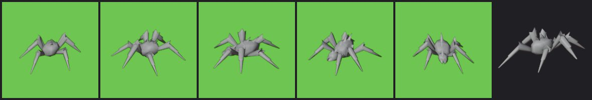
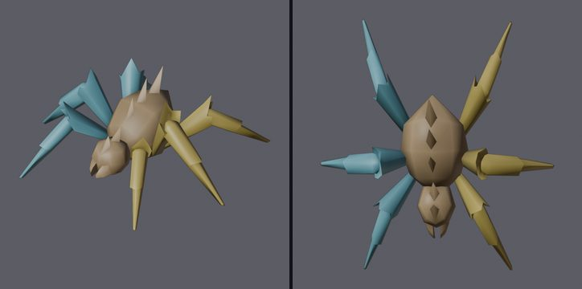
The probe now counts the leg chains and reads a creature's forward from its head bone, so the same file says this at once: "It has 6 leg chains (3 left, 3 right): a walk can be made without a clip (driver_depth mode gait) and a death on its back (mode flip_curl); a missing pair is copied by tools/blender_limb_clone.py." and "forward +Y (head)".
One more trap: the file's rest pose is not its stance. Without the clip playing, every leg sits far off to one side (the model came from Sketchfab as an FBX turned into a GLB, and the skin was bound in another pose). Anything that works from the rest pose, like copying a leg, has to fix that first.
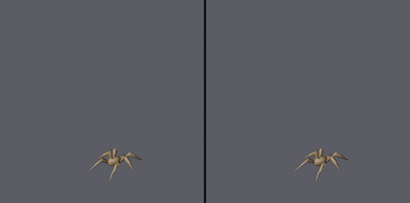
Each leg of this model is a separate set of mesh pieces carried by its own four bones, so a leg can be copied whole: the bones are duplicated, the mesh pieces those bones carry are duplicated with their weights moved to the new bones, and the copy is turned round the vertical axis through its hip. The middle pair was copied and turned back, the originals turned a little forward, so the four legs a side fan out like a real spider's (two reaching forward, two back).
"$BLENDER" -b --python tools/blender_limb_clone.py -- \ src=tools/dl/uploads/3d/spider._low_poly.glb \ out=tools/dl/uploads/3d/spider_8legs/spider_8legs.glb \ rest=frame:0 forward=+Y \ "clone=left_leg_center_:left_leg_mid_:24:-0.06;right_leg_center_:right_leg_mid_:-24:-0.06" \ "turn=left_leg_center_:-18:0.03;right_leg_center_:18:0.03"
rest=frame:0 bakes the clip's first pose into the mesh and makes it the rest pose (Blender's Apply Pose as Rest Pose). The old clip is dropped: its keys were made against the old rest pose and would throw the legs about.clone=chain:new:yaw:shift: every bone whose name starts with left_leg_center_ is copied as left_leg_mid_…, turned 24° (counter-clockwise seen from above) and slid back 6% of the leg's reach so the two hips do not sit on one point.turn=chain:yaw:shift turns an existing leg the same way.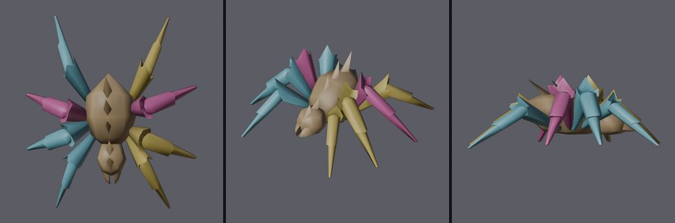
The signs took one try to get right: on a model facing +Y a left leg turns forward with a negative yaw. The first run used the rest pose as it was and turned the legs round hips that were somewhere else; the legs crossed. Both lessons are in the tool's text and in the Level Editor's notes.
With no walk clip, the walk is made from the legs themselves. The tool finds the legs by name (legs=leg_: every bone with leg in its name whose parent is not a leg starts a chain), works out which side each is on and its order front to back, and moves them in two sets half a stride apart, the way spiders walk: left 1, right 2, left 3, right 4 together, then right 1, left 2, right 3, left 4.
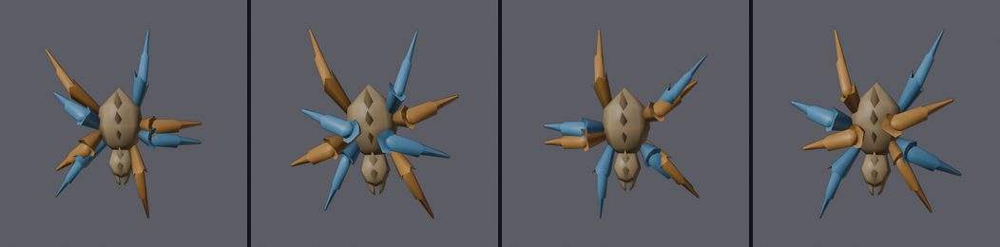
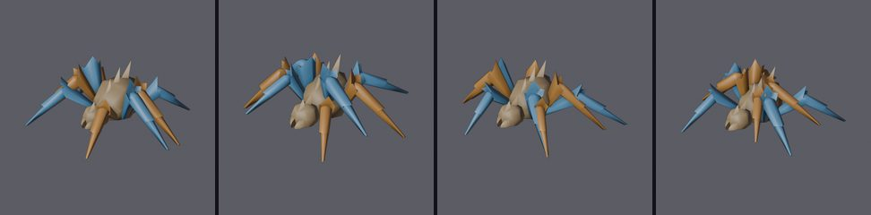
Each leg turns round its hip (swing 18° fore and aft), rises while it steps (lift 24°), bends its knee while it is up (flex 16°), and stays on the ground for 55% of the stride (duty). The body dips twice a stride (bob) and turns a little side to side (sway). Every turn is done in world space round the joint, so the rig's own bone axes, often nonsense in a Sketchfab file, never matter. A creature's real step is too small to read at sprite size (the beetle needed its legs swung 1.7 times wider); the made walk is wide from the start.
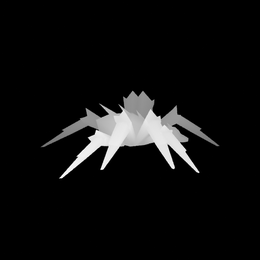
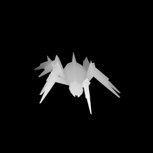
"$BLENDER" -b --python tools/blender_depth_drivers.py -- \ src=tools/dl/uploads/3d/spider_8legs/spider_8legs.glb out=tools/dl/drivers/spider_walk \ mode=gait forward=+Y legs=leg_ frames=12 cycles=2 swing=18 lift=24 flex=16
Turning every leg round its hip moves a sideways leg's foot fore and aft, but sweeps a forward or backward leg's foot across the body. In the game's front and back views most legs looked still and the front and back ones slid sideways. SP-B walks on it; SP-E and SP-F walk on the fixed spider_walk_v2: step 4.
You played SP-B and wrote: "currently most legs aren't moving, and the ones that are moving are moving in the wrong direction". You were right, and the fault was not the painter: it was the walk made in Blender (step 3). Every look on spider_walk inherited it.
1. Each leg was turned like a clock hand round its hip. The first walk turned every leg 18° forward and back round the vertical line through its hip. That is the right motion for a leg that sticks straight out to the side: its foot then moves forward and back. But a spider's front legs point forward and its back legs point back, and turning those round the hip sweeps their feet across the body, left and right, not along it. Seen from above, the feet trace arcs at right angles to each leg:
2. The game looks from the front and from behind most of the time, 25° above the ground. From there, a foot moving forward and back moves towards and away from the camera, and on screen that is almost nothing (it shows at about 40% of its real size, as a small up-and-down). So the middle legs, the only ones stepping the right way, looked still; and the front and back legs, the ones that did visibly move, slid sideways. That is your two observations exactly:
The side view, the one view where forward and back is visible, had the opposite problem: there the front and back legs moved along a short arc and slid back only 19–35 px a stride, against 71–98 px for the middle pair; half the legs barely stepped.
| Measured on the depth video (pixels of 640) | Before (swing) | After (track) |
|---|---|---|
| Front view: front and back feet, sideways travel | 94 – 132 | 0 |
| Front view: every foot, up and down | 47 – 71 | 83 |
| Back view: front and back feet, sideways travel | 94 – 132 | 0 |
| Side view: how far a planted foot slides back | 19 – 98 (front and back pairs 19 – 35) | 90, every leg |
| Side view: how high a foot rises | 39 – 87 | 61 |
Legs gait_check calls SIDEWAYS (front + back views) | 4 + 4 | 0 |
3. The painter was not to blame. To be sure, the painted SP-B walk was compared with its depth video frame by frame: at every foot, the painted picture's motion (optical flow) against the driver's foot motion. Where a leg is visible, the paint moves the same way as the driver (a match of 0.6 to 0.98 out of 1, at 50–98% of the driver's distance). The legs that did not follow are the ones hidden behind the big painted abdomen in the side views. Wan 2.2 copied the walk faithfully, sideways sweep and all.
The new way of moving a foot is step=track (the old one stays as step=swing, the default, so the old drivers are unchanged):
crouch. This model's legs rest almost straight, so a front leg reaching forward or a back leg reaching back had nothing to give and lay flat on the ground (left below). Pulling every foot's track in by 15% of its reach bends the knees a little at rest and leaves room.crouch 0, left: the near front and back legs straightened and lie flat) and the kept one (crouch 0.15, right)."$BLENDER" -b --python tools/blender_depth_drivers.py -- \ src=tools/dl/uploads/3d/spider_8legs/spider_8legs.glb out=tools/dl/drivers/spider_walk_v2 \ mode=gait forward=+Y legs=leg_ step=track stride=0.22 raise=0.15 crouch=0.15 sway=0 bob=0.03 tips=1 python tools/gait_check.py tools/dl/drivers/spider_walk_v2
stride 0.22: how far each foot travels fore and aft, a share of the spider's length with its legs (here 90 px of the side view).raise 0.15: how high a foot lifts mid-step, a share of the same length. From the front and back, a step shows mostly as this lift, so it is bigger than a real spider's.crouch 0.15: the knees' room, above.sway 0 (it was 2.5°): turning the body side to side drags every planted foot sideways with it; a spider's body runs level. bob 0.03: a smaller dip.tips=1: the driver also writes tips.json, where every foot is in every view's frame; gait_check.py draws the paths and names any leg that steps the wrong way.python tools/gait_check.py tools/dl/drivers/<name> writes gait_check.png into the driver folder (each foot's path on the clay, per view) and prints a verdict per leg: in the side view a planted foot must slide back (else BACKWARDS, or barely steps when it moves under a quarter of the best leg); in the front and back views a foot must not travel further sideways than up and down (else SIDEWAYS). The Level Editor's depth driver job runs it after every made walk.
spider_walk (before): front L4 SIDEWAYS L2 ok L1 SIDEWAYS L3 ok R4 SIDEWAYS R2 ok R1 SIDEWAYS R3 ok, the same in the back view.spider_walk_v2 (after): every foot steps the right way in every view.The same SP-B paintings, the same seeds and words, walked once on the first walk (what the game plays) and once on the fixed one, only for this comparison (the game's SP-B is unchanged). Nothing else was changed, so both keep SP-B's other faults (the grey ghost legs, next):
fit_ref, new). Klein painted SP-E's front 1.54 times as wide as the depth figure (SP-B's front too). Wan keeps the painting's size, so the painted legs outside the depth's legs stayed on as faded grey legs beside the walking ones. fit_ref scales and moves the painting onto the depth figure before the walk. Alone it went too far: Wan then followed the clay, and the face and the striped abdomen went. With the depth softened 10 px (ctl_soft, pass 92) it keeps both and the legs still step. SP-E and SP-F use "fit_ref": ["front"] and "ctl_soft": {"radius": 10, "body": false, "views": ["front", "side"]} (the soft side view kept the face too, which the sharp one lost, as SP-B's side does).no_green "rb", new). The strip's green guard holds every pixel's green down to its red, to kill the screen's spill. Sky blue has more green than red, so the whole of SP-F went periwinkle. "no_green": "rb" holds green down to the larger of red and blue instead: spill still goes, sky blue stays.| Suspect | Verdict |
|---|---|
| The left and right sides swinging opposite ways (a sign mirrored) | No: in the side view every planted foot slid back, on both sides. The direction fault was sideways, not backwards. |
| The swing too small for the sprite | Partly: the middle legs' step was fine in size but invisible from the front. A bigger swing would only have made the sideways sweep bigger. The lift is now bigger on purpose. |
| The depth video's legs too thin or too dark for Wan to follow | No: the painted walk followed every visible leg (above). The thin legs stay; the far legs hidden behind a fat painted body are hidden in any walk. |
| Wan smoothing small motion away; too few frames (12 a stride); the strip's speed (20 a second) | No: the painted motion matched the driver's in size (50–98%). Twelve frames and 20 a second are kept. |
The same run renders the five game views (front, three-quarter front, side, three-quarter back, back) from a camera 25° above, orthographic, framed on the whole stride. For each view it writes a clay picture (what the painter redraws) and 25 depth frames (two strides plus a closing frame: what the video model walks along). The eight game directions are these five, mirrored. (The pictures here are of the first walk; the fixed walk renders the same five views.)
A dead spider lies on its back with its legs folded in over its belly (its leg muscles let go and the legs curl inward). The model has no death clip, so the death is made, the same way as the walk, and rendered as a death driver: 25 depth frames of the front view that the video model walks the front painting along.
| When | What | Setting |
|---|---|---|
| 0 – 0.12 s | The hit: every leg flings up 22° and the body jumps a little | spasm, spasm_deg |
| 0.08 – 0.48 s | The roll: 180° sideways round its own length, eased in and out, kept on the ground (its lowest point always touches the sand) | roll_start, roll_time 0.4, roll, roll_axis side, roll_dir |
| 0.05 – 0.75 s | The curl: each hip swings its leg 70° towards the belly, each knee folds 55° more; it keeps folding after it lands | curl_root, curl, curl_start, curl_end |
| 0.48 – 0.83 s | Two small bounces on its back, dying away | bounce 0.12 of its height |
| 0.75 – 1.02 s | The folded legs twitch, smaller each time | twitch 6° |
| 1.02 – 1.2 s | Held: the dead pose | hold 0.85 of the clip |
The legs fold round one axis each (the horizontal line across the leg at its hip), read once from the standing pose. The first version worked the axis out again at every joint from where the leg pointed; once a leg folded past straight down its direction flipped and the fold turned back on itself, leaving the legs bunched out sideways. The fixed fold is on the right:
"$BLENDER" -b --python tools/blender_depth_drivers.py -- \ src=tools/dl/uploads/3d/spider_8legs/spider_8legs.glb out=tools/dl/drivers/spider_death \ mode=flip_curl forward=+Y legs=leg_ total=25 views=front,fd,side curl_root=70 curl=55
The painted deaths, and which of the 25 frames each look keeps, are in Painting the three looks. The walk fix did not touch the death: SP-E and SP-F die on this same spider_death.
Each look runs the scorpion's method unchanged: the side view is painted first, as four candidates from the side clay with the style picture as the first reference; you pick one; the other four views are painted from that side painting and their own clay, with the way each view faces spelled out; then Wan 2.2 Fun Control walks every view along its depth video and the front painting along the death video; last, everything is fitted to one scale and packed into the strip (eight directions from five views).
python tools/gen_ctl.py --id=desert_spider --variant=SP-E # four side candidates, then it stops python tools/gen_ctl.py --id=desert_spider --variant=SP-E --use-side=k1 # the rest: four views, five walks, the death, the strip
SP-B is pass 92's mild cartoon tarantula on the first walk. SP-E and SP-F are SP-B's recipe with only the colour words changed (and the belly's colour in the death words, and the outline's colour), walked on the fixed spider_walk_v2; they die on the same spider_death.
SP-B, SP-E and SP-F are shown in short at the top of section ★; the long pages of their candidates and strips are gone: you called SP-E and SP-F awful, and section ★ says why.
| Look | prompt | What changed |
|---|---|---|
| SP-B | a chunky cartoon desert tarantula with a round fuzzy rust-orange abdomen with a cream stripe pattern, thick fuzzy brown legs with orange bands at the joints, two big shiny black eyes with white highlights and four tiny eyes above them, a small grumpy frown and two little curved fangs | pass 92's words (detail: a slightly oversized head, friendly-mean mobile game creature, still clearly a spider) |
| SP-E | a chunky cartoon desert tarantula with a round fuzzy pale lavender abdomen with a soft cream stripe pattern, thick fuzzy light lilac-purple legs with pale lavender bands at the joints, two big shiny black eyes with white highlights and four tiny eyes above them, a small grumpy frown and two little curved fangs, the whole spider light purple | the four colour words; "the whole spider light purple" at the end so no part drifts back to brown; death words: "its pale lavender belly"; outline #2C1838 |
| SP-F | a chunky cartoon desert tarantula with a round fuzzy pale sky-blue abdomen with a soft white stripe pattern, thick fuzzy powder-blue legs with pale icy-blue bands at the joints, two big shiny black eyes with white highlights and four tiny eyes above them, a small grumpy frown and two little curved fangs, the whole spider light blue | the same, in blue; death words: "its pale blue belly"; outline #132A3E. Green screen kept: light blue keys cleanly off green (a blue screen would eat it) |
anatomy, sent in every painting and every walk:
Each part of it answers a way many-legged creatures go wrong: a number per side (painters count better per side than in total), "one single continuous limb" (legs that split or merge at a knee), "starts at the body" (a leg growing out of the head), "ends in one pointed foot" (double feet), the absent parts named (an insect's antennae and a scorpion's tail creep in), symmetry (five legs on one side, three on the other).
blockout (how the clay is described): a smooth plain clay 3D model of a spider: a small head with two short fangs at the front, one big oval abdomen behind it, and eight long jointed legs, four on each side, spread round the body. The painter is told to take only the anatomy, the pose, the camera angle and where every leg is from the clay.
words.front, written after an earlier look's front walk grew ghost legs (the painting fanned every leg sideways while the depth had the front pair reaching at the camera): walking straight towards the viewer, seen from the front and a little above: its head and two fangs are at the bottom middle of the picture, nearest the viewer; its two front legs reach forward towards the viewer, one on each side of the head, and its other six legs spread out to the left and the right, three on each side; the round abdomen rises behind the head.
motion (SP-B): scuttling in place on its eight legs like a real spider, the legs stepping in two alternating sets of four, the body low and level. SP-E and SP-F say how a foot moves too: … like a real spider, each foot stepping forward through the air and pushing back along the ground, the legs stepping in two alternating sets of four, the body low and level. The words only help; the walk is the depth video's.
The look keeps a negative list (anim_negative): extra legs, nine legs, ten legs, six legs, legs merging, a leg growing from the head, antennae, a tail, wings, two heads, a second spider, standing upright. In this pipeline it changes nothing, and neither did the scorpion's:
--dev) is guidance-distilled: it has no negative input at all.To see whether a real negative would help, the side of pass 92's near-real look (SP-A, not shown here any more) was painted again on Klein with the negative wired in, at cfg 2 and cfg 3 (the same seed, then another):
So the leg count is held by three things instead: the clay (it must have the right legs: the six-legged model would have taught every painting six), the anatomy words above, and your eye. The vision check cannot count legs; every candidate here was counted by hand, tip by tip, near side and far side. The walks follow the depth video's legs, so a painting with the right legs walks with the right legs, unless the painting and the depth disagree about where they are (the ghost legs in the mistakes).
Every leg turned round its hip like a clock hand: the front and back legs swept their feet sideways, and from the game's front and back views the middle legs' step was too foreshortened to see. SP-B shows it. Found by drawing every foot's path per view (tips=1, gait_check.py) and by checking the painted walk against the driver (the painter copied it faithfully). Fixed with step=track: step 4.
Nothing in the old probe said so; every painter copies the clay, so a six-legged clay would have made six-legged spiders in every look. Found by counting the bones, fixed with the leg copy (step 2). The probe counts leg chains now.
The probe guessed −Y for a spider facing +Y, and the file's rest pose sits far from its stance. The first leg copy turned legs round hips that were somewhere else and the legs crossed. Both fixed in the tools (the head bone gives a creature's forward; rest=frame:0).
The first death recomputed each leg's fold axis at every joint. Once a leg passed straight down the axis flipped and the legs ended bunched out sideways instead of curled over the belly. One axis per leg, read from the standing pose, fixed it (picture in step 5).
words.front places the front legs where the model has them (all three looks here carry it).body_scale, head_pitch, ctl_soft). SP-B's face fits the model's head and needs none of it.The paintings never show a spider's underside, so the walk invents the belly the roll shows, and on a green screen it invents green: every death has pale green patches under the curled legs, which the strip's green guard turns grey. Naming each look's belly colour in the death words ("its pale lavender belly … nothing green") did not stop it. A softened death video was worse (the whole spider went to mush) and was dropped. The dead pose still reads: on its back, legs curled up. A cleaner belly would need a painted dead still as the death's last frame, or a blue screen (not for SP-F, which is blue itself).
Frames 5 and 6 of every death (the spider on its side, legs flung) come out as a blur of legs: the video model cannot keep a figure together through a fast half-turn. death_keep skips them: [3, 4, 7, 8, 9, 11, 14, 24] keeps the stand, the start of the roll, the landing, the curl and the held dead pose. At the game's 12 frames a second the roll takes four frames, a third of a second.
As described above: they reach no model in this pipeline, and wiring a real one into Klein at cfg 2 or 3 did not hold the leg count.
The walk cache was found by name alone, so after a view was painted again its old walk would have come straight back. The cache now checks the painting, the seed and the control video, and picking a repainted view sets its old walk aside.
Everything above was run from the command line so it could be watched and fixed on the way. This is the route you would take in the Level Editor for the same spider, with the fixes from this pass in place. The values are the ones used here.
Enemies tab → + New from template ▾ → the Fire Ant (the numbers this spider starts from) → id desert_spider, name Desert Spider. Set size 1.3, radius 0.5, pack 3, blood #7BC43A, frame_px 160, the doc line. Leave it off the timeline until its looks are approved. Save asset.
In the spider's editor, + Depth driver… opens the driver form; its method cards hold everything 3D. Your file sits loose in tools/dl/uploads/3d/, which the editor now lists (it used to see only models in a folder of their own). Pick What a 3D file can do, src spider_low_poly (spider._low_poly.glb), Queue. Its probe line then reads: rigged model (other rig) with 1 clip · 6 leg chains (3 left, 3 right); no walk among the clips? driver_depth mode gait makes one, mode flip_curl a death on its back; a missing leg pair is copied by "A model's legs fixed" (ref_limbs) · forward +Y.
+ Fix a model's legs… (method A model's legs fixed, new):
spider_8legs, rest frame:0, clone and turn as in step 2 above, forward +Y. It writes tools/dl/uploads/3d/spider_8legs/spider_8legs.glb, a top view to check (top.png) and the new model's probe (8 leg chains, 4 a side).+ Depth driver… → Depth drivers from a rigged model's own clip, or a made walk and death. Two jobs:
spider_8legs, name spider_walk, mode gait, legs leg_, forward +Y; no action.track (values in step 5b below).spider_death, mode flip_curl, views front,fd,side (front alone is enough for the game), curl 55, curl_root 70.(Pass 92 also made proportioned drivers for two very cartoony looks, no longer shown here: spider_walk_c / spider_death_c with body_scale 1.6, head_scale 1.5, leg_scale 0.85, head_pitch 30, and spider_walk_d / spider_death_d with 1.5, 1.6, 0.65, head_pitch 35 ; why: mistakes, the face that vanished.)
In the spider's editor, + Generate art… → method Creature: walked on a 3D model's own motion. The recipe fields, with SP-B's values:
| Field | Value |
|---|---|
| drivers | spider_walk (SP-E, SP-F: spider_walk_v2) |
| prompt | the look's words (below) |
| noun | a spider |
| blockout | a smooth plain clay 3D model of a spider: a small head with two short fangs at the front, one big oval abdomen behind it, and eight long jointed legs, four on each side, spread round the body |
| detail | the finish words of the look |
| anatomy | exactly eight legs, four on each side, each leg one single continuous jointed limb … (in full below) |
| words | the four camera sentences (front, fd, bd, back) |
| motion | scuttling in place on its eight legs like a real spider, the legs stepping in two alternating sets of four, the body low and level |
| death_drivers | spider_death |
| death_motion | it jerks, rolls over onto its back and lies dead with its eight legs curled up over its <belly colour> … |
| death_keep | [3, 4, 7, 8, 9, 11, 14, 24]: the stand, the roll without its two smeared frames, the landing, the curl, the held dead pose |
| directions, fps, screen | 8, 20, green |
| outline_frac, outline_color | 0.014, a dark of the look's colour |
| Candidates (job) | 4 |
Queue. The job paints four side candidates and waits on its card for your pick: count the legs of each (see the leg count), pick, and it paints the other four views and walks all five, then the death.
When a view comes out wrong (a front that grows ghost legs, a back whose legs keep the clay's colour), Re-roll… the look and fill the continuation fields: view_cands front,fd, Candidates 3; pick one per view on the card. Since this pass the walk of a view painted again is walked again by itself. To change which death frames are kept, edit death_keep and Re-roll: no new render, a few seconds.
Two jobs of yours and two picks: a fixed walk, then a duplicate of SP-B per colour. This is what pass 93 did, as Level Editor steps.
| Field | Value | Why |
|---|---|---|
| src | spider_8legs | the eight-legged model from step 3 |
| name | spider_walk_v2 | a new folder: the old walk stays for SP-B |
| mode | gait | a made walk (no clip); the made walk's fold opens |
| legs, forward | leg_, +Y | as before |
| step | track | every foot moves along the body (swing turned the legs like clock hands) |
| stride | 0.22 | the default: each foot travels 22% of the spider's length |
| raise | 0.15 | a higher lift than the default 0.12: from the front and back a step shows mostly as the lift |
| crouch | 0.15 | the straight-legged model needs knee room (with none its front and back legs stretch out flat) |
| sway | 0 | the body's turn dragged the planted feet sideways |
| bob | 0.03 | a smaller dip |
| everything else | empty / default | swing, lift and flex are not read by step track |
track (swing, lift and flex stay greyed at their defaults, unused), stride 0.22, raise 0.15, crouch 0.15, sway 0, bob 0.03.tools/dl/drivers/spider_walk_v2/) holds gait_check.png: look at the coloured paths. In the side view each foot draws a D (the flat bottom on the ground, sliding back), in the front and back views short up-and-down strokes; the job's log names any leg SIDEWAYS or BACKWARDS. If one is, change step or crouch and queue again under the same name.| Field | SP-E (light purple) | SP-F (light blue) |
|---|---|---|
| note | SP-B in light purple on the fixed walk | SP-B in light blue on the fixed walk |
| prompt | SP-B's words with rust-orange → pale lavender, cream → soft cream, brown legs → light lilac-purple, orange bands → pale lavender, and at the end , the whole spider light purple | rust-orange → pale sky-blue, cream → soft white, brown → powder-blue, orange → pale icy-blue, and , the whole spider light blue |
| drivers | spider_walk_v2 (death_drivers stays spider_death) | |
| death_motion | … curled up over its pale lavender belly … | … over its pale blue belly … |
| outline_color | #2C1838 | #132A3E |
| motion (optional) | scuttling in place on its eight legs like a real spider, each foot stepping forward through the air and pushing back along the ground, the legs stepping in two alternating sets of four, the body low and level | |
spider_walk_v2, walks the death and packs the strip and the icon (about 12 minutes on the server).fit_ref) to ["front"] and ctl_soft to {"radius": 10, "body": false, "views": ["front", "side"]}, Save asset, then Re-roll… → keep the stills, redo the clips. For a light blue look set No green to "rb" before the first run (else the strip comes out royal blue).Test in game (the spider's editor) plays it in the arena; approve the look you like (the others stay fresh), make it the default, and add a roster row on the Timeline when you want it in a stage.
| Problem met | Fix | Where |
|---|---|---|
| The probe never said the spider had six legs; the painters copied the clay | probe.json limbs (count, left, right); the probe line in the page says it and names the next step | blender_ref.py, jobs.js |
| The probe said −Y for a creature facing +Y (it only read humanoid feet) | A rig without feet: forward from the middle of its joints to its head bone (forward_basis: head) | blender_ref.py |
A model dropped into uploads/3d by hand (yours: the spider, the ant, the raptor) was never listed, and its probe would have gone to uploads/3d/probe.json, shared by every loose file | Loose models are listed under their own slug; their probe and renders go to uploads/3d/<slug>/; the pickers use the file's own path | server.py, jobs.py, jobs.js |
| A rigged model without a walk clip could not drive a walk | driver_depth modes gait and flip_curl, their settings in two folds that open with the mode; only changed settings reach the command line | blender_gait.py, blender_depth_drivers.py, jobs.py, methods.json, jobs.js |
| A cartoon look's walk lost its face on the plain model's depth | Proportion settings on the made motions (body_scale, head_scale, leg_scale, scale_bones, head_pitch), and the recipe keys ctl_soft / death_soft: the depth video softened before the walk | blender_gait.py, animate.py (soften_ctl), gen_ctl.py, methods.json |
| No way to fix a model's legs | New job kind and method ref_limbs (A model's legs fixed): the fixed model as a new upload, probed | blender_limb_clone.py, jobs.py, methods.json |
| The creature editor had no button for its 3D steps (only the Heroes tab opened a driver form) | + Depth driver… and + Fix a model's legs… under a creature's looks | assets.js |
A model field (src) of a driver job was a plain text box: you had to type the path | A methods.json file field keeps its upload picker | jobs.js |
| A view painted again kept its old walk: the walk cache was keyed on the name only, and walk_seeds needed its folder moved away by hand | A cached walk serves only the same painting (a hash of it), the same seed and the same control video (its folder and its frames on disk); picking a view painted again sets its old walk aside | animate.py (cache_fits), gen_ctl.py, methods.json |
| Pass 93: a made walk's legs looked still or slid sideways, and nothing showed where the feet went | driver_depth's made walk has step (swing | track) with stride, raise, crouch, knee in the gait fold; every made motion writes tips.json and a made walk is checked by gait_check.py as the job's second step (gait_check.png in the driver folder) | blender_gait.py, blender_depth_drivers.py, gait_check.py, jobs.py, methods.json |
| The help said negative words keep extra legs out of the walks; they change nothing at cfg 1 | anim_negative's help says so; creature_ctl's notes give the many-legs rules | methods.json |
Seen and left: a new creature without an icon makes the page ask for that icon a few hundred times (404s in the console, harmless; the register job's placeholder ends it), and a form opened on a chosen method does not scroll to its card. All checks: python tools/level_editor/selftest.py green, the new ones in selftest_SPIDER92.py and selftest_LEGS93.py.
| Setting | Default | Spider | What it does |
|---|---|---|---|
legs | leg words | leg_ | Which bones are legs (a regex over their names) |
gait | alternate | alternate | Two sets half a stride apart (spider, insect tripod, trot); wave ripples each side from the back |
swing | 14° | 18° | How far each leg turns fore and aft |
lift | 18° | 24° | How high a leg rises while it steps |
flex | 14° | 16° | How much the knee bends while the leg is up |
duty | 0.55 | 0.55 | Share of the stride a leg is on the ground |
bob, sway | 0.04, 2.5° | same | The body's dip and side-to-side turn |
base | (rest pose) | — | Seconds into a clip whose pose is the stance |
| Setting | Default | spider_walk_v2 | What it does |
|---|---|---|---|
step | swing | track | swing: each leg turns round its hip (swing, lift, flex: pass 92's walk, the old drivers keep it). track: every foot follows a straight track along the body, planted and sliding back on the ground, an arc forward through the air; the hip and knee bend to reach it |
stride | 0.22 | 0.22 | How far each foot travels fore and aft, a share of the creature's length (legs included) |
raise | 0.12 | 0.15 | How high a foot lifts mid-step, a share of the same length |
crouch | 0.1 | 0.15 | Each foot's track pulled in towards its hip by this share of its reach: knee room for straight legs |
knee | up | up | up: knees above the hip-to-foot line (spiders, insects); down: below |
sway, bob | 2.5°, 0.04 | 0°, 0.03 | As before; a track walk wants no sway (it drags the planted feet) |
tips | 0 | 1 | (any made motion) write tips.json: every foot's place per view and frame. The Level Editor always sets it for gait and flip_curl |
python tools/gait_check.py <driver> [--strict] draws gait_check.png from tips.json and names legs that step BACKWARDS (side view), SIDEWAYS (front and back views) or barely step; --strict exits 1 on a wrong leg (the editor's job runs it without, so a check never fails a job).
| Setting | Default | Spider | What it does |
|---|---|---|---|
roll_axis | side | side | Rolls over sideways (a spider) or end over end (front) |
roll, roll_dir | 180°, 1 | same | How far and which way it turns over (170°: tipped a little) |
roll_start, roll_time | 0.08 s, 0.4 s | same | When the roll starts and how long it takes |
curl_root | 40° | 70° | Each hip swings its leg towards the belly |
curl | 70° | 55° | Each knee folds in |
curl_start, curl_end | 0.05 s, 0.75 s | same | When the curl runs |
bounce | 0.12 | 0.12 | Bounce on landing (share of its height) |
twitch | 6° | 6° | The curled legs twitch before it lies still |
spasm, spasm_deg | 0.12 s, 22° | same | The hit: the legs fling up |
seconds, hold | 1.2 s, 0.85 | same | Clip length; after this share the dead pose is held |
| Setting | Default | pass 92 look C | look D | What it does |
|---|---|---|---|---|
body_scale | 1 | 1.6 | 1.5 | The body bigger, the legs keeping their size |
head_scale | 1 | 1.5 | 1.6 | The head bigger (room for a cartoon face) |
leg_scale | 1 | 0.85 | 0.65 | Every leg longer or shorter |
scale_bones | — | — | — | name:factor,… any other bone |
head_pitch | 0° | 30° | 35° | The head raised so its face looks at the front camera |
ctl_soft {"radius": 10, "body": false, "views": ["front"]}: the views named walk along their depth video blurred by radius pixels (written once beside the driver, spider_walk_d_soft10/); body: true blurs only the body and head and keeps the thin legs sharp (it did not keep the face here). death_soft the same for the death video. Without them nothing changes.
rest=frame:<n>, clone=chain:new:yaw[:shift];…, turn=chain:yaw[:shift];…, forward, shot. Yaw is counter-clockwise from above; shift is a share of the leg's reach along forward.
| Step | Where | Time |
|---|---|---|
| Probe the model | Blender, this PC | 4 s |
| Fix the legs (copy, turn, rest pose) | Blender | 10 s |
| Made walk: 5 views × 25 depth frames + clay + look | Blender | 10 s |
| Made death: 3 views × 25 frames | Blender | 8 s |
| Side candidates (4, Klein) | AI server | 25 s each, 2 min |
| Your pick | you | a minute: count the legs |
| The other four views (Klein) | AI server | 25 s each |
| Five walks (Wan 2.2 Fun Control, 25 frames) | AI server | 65 – 120 s each, about 7 min |
| The death (Wan, 25 frames, 8 kept) | AI server | 75 – 80 s |
| A view painted again (3 candidates) and walked again | AI server | about 3 min |
| Different death frames kept (death_keep) | this PC | seconds, no render |
| One look, start to strip | about 12 minutes of the server, plus the picks |
Both passes ran their jobs one at a time through the ComfyUI lock, sharing the server with your own Level Editor queue. Pass 93: the fixed walk 15 s in Blender; SP-E and SP-F about 12 minutes each, plus four more SP-F side candidates (2 min), SP-E's back painted again (3 candidates, 1.5 min) and walked again, and three test walks of SP-E's front and side (about 2 min each) to choose fit_ref and the softened depth.
tools/item_shots.gd creatures=desert_spider@SP-B,desert_spider@SP-E,desert_spider@SP-F zoom=0.7), three of each walking at the hero.The spider plays SP-B (a creature with looks must play one); SP-E and SP-F are marked fresh until you approve one, and SP-A, SP-C and SP-D are still in its JSON (fresh, not shown here). It is on no map: its numbers are the Fire Ant's for now (36 HP, speed 3, bite 8, packs of three). Place it from the Timeline when a look is approved; Make default on SP-E or SP-F gives it the fixed legs.